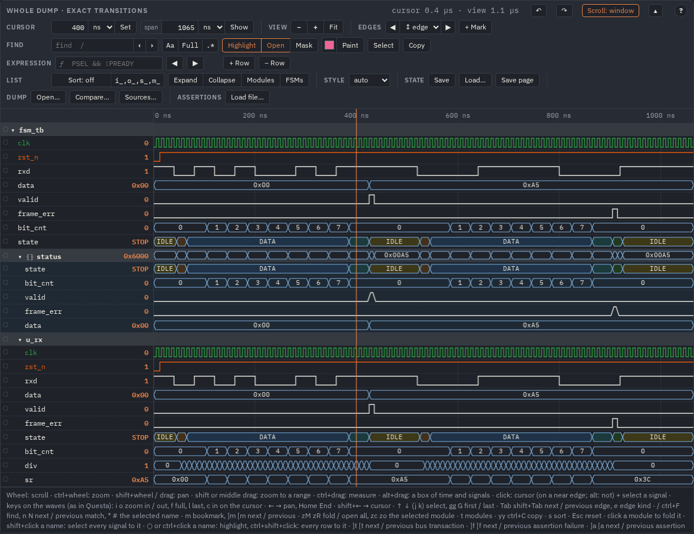
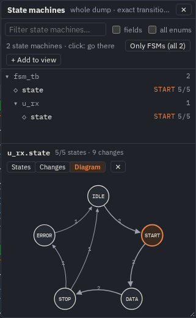
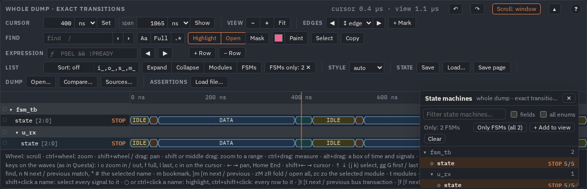

State names and structs: the design's types
A VCD has no types. Questa writes an FSM's state_t state as reg [2:0] and a packed struct
as one vector, so the waves show 2 where you want DATA. WaveLens takes the types from the tool that
compiled the design, Questa or Verilator. They go into a file next to the dump, tb.types.json, keyed by each signal's path.
Then every state bus has its own names and every struct shows its fields, whatever the packages, includes, macros, parameters and
generate blocks.
How it works
- The types are written. Questa: a Tcl script in the same
vsimrun asksdescribeabout every signal. Verilator:svtypes.py verilatorcompiles the design with--json-onlyand walks its instances. Either way the result istb.types.json: for each path, the enum's table or the struct's fields. - WaveLens reads them.
make html WAVES=tb.vcdfindstb.types.jsonby its name. The viewer takes it in Sources…. The VS Code tab reads it next to the dump, and again when it changes. - By path, by width. A signal gets the type of its own path,
tb.u_rx.state, only when its width in the dump is the type's. Two modules'stateeach get their own table. A plainlogic [1:0] statestays a number, and so does a signal the file does not name. One exception: Questa 2023's VCD writes a variable of an enum type asinteger 32, the code its value, and such an integer takes the enum's labels (the log under the viewer says a value that is no code of it, or onlyx: a VCD ofwlf2vcd, which loses them).

out/examples/fsm/fsm_all.html, make examples). fsm.types.json from Verilator names
state and u_rx.state and splits the 16-bit status into its fields; its state
field has names too. The same page comes from Questa's VCD with make questa EX=fsm.With Questa
Source tools/questa/wavelens_types.tcl in vsim and call wavelens_types any time after the
design is loaded, before or after run. Name the file after the dump:
vlog -sv -f files.f
vsim -c -voptargs=+acc work.tb +trace -do "
source /path/to/wavelens/tools/questa/wavelens_types.tcl
wavelens_types tb.types.json # every signal under /*
vcd file tb.vcd; vcd add -r /tb/* # or $dumpfile / $dumpvars in the testbench
run -all; quit -f"-voptargs=+acckeeps the signals visible. Without it Questa optimises them away from the VCD as well.wavelens_types tb.types.json /tb/u_dutcovers only that instance and what is under it. The whole design is seldom too much: 110 000 signals in 10 000 instances take 12 s invsimand give an 8.6 MB file, which the page reads in 0.3 s.- An old run, with no simulation:
vsim -c -view old.wlf, thensource …andwavelens_types old.types.json old:/tb(the dataset is named after the WLF file). A WLF holds the same types. - The file holds Questa's own words (
describeof each signal, the module of each instance), and WaveLens reads them. Questa'sdescribegives only 32 bits of each enum value, so an enum wider than 32 bits is left as a number, with a note.
To try it on the example: make questa EX=fsm (vsim on PATH). It builds
out/questa/fsm/ with Questa's fsm.vcd, fsm.types.json and fsm.html, the same
steps as above.
With Verilator
When the dump is not from Questa, or Questa is not at hand, Verilator 5 reads the same sources. After -- come the
arguments you give Verilator anyway:
python3 -I tools/svtypes.py verilator --top tb --out tb.types.json -- -f files.f
python3 -I tools/svtypes.py verilator --top tb --out tb.types.json -- +incdir+rtl rtl/pkg.sv rtl/*.sv -GDEPTH=16Verilator only elaborates here; nothing is built, and the dump may come from any simulator. Its parameters must be those of the
run (-G…, +define+…). When another parameter changes a width, those signals stay numbers, with a
note. When it changes only the values of an enum (the same width), nothing tells: the labels are those of the other
parameters. The width check is the only check; a types file from another run of the same width is taken as it is.
make examples does this for each example (out/examples/<ex>/<ex>.types.json).
Verilator's file also has what Questa's VCD leaves out: a package's variables (p.state), unpacked arrays of
any dimensions (two[1][2] gets the type of two), escaped names as the VCD writes them
(u-l.st-x), and enums of up to 64 bits.
Using the file
| Where | What to do |
|---|---|
a page: make html | make html WAVES=tb.vcd finds tb.types.json by its name;
another file: TYPES=x.types.json. Behind it mkconfig.py --types writes the names into the config;
a types file newer than the config updates it at the next make html (or make config). What the
file gave is listed in the config's "typed": an update replaces it with the file's of now, or takes it
away when the file no longer gives it. An "enum" you wrote or edited stays. |
| the viewer | Open… the dump, then Sources… and pick
tb.types.json. The view is kept, and ⟳ keeps the types. |
| VS Code | nothing to do: the tab reads tb.types.json next to tb.vcd (or
tb.fst) at each read. When the file is written again the tab offers ⟳, or reads
the dump at once with wavelens.autoReload. WaveLens: Make the types with Verilator writes it from a
.f file of the workspace (no Python needed). |
| another root | the dump's scopes as the file names them: "map": {"top.dut_i": "dut"} in the file,
--types-map top.dut_i=dut for mkconfig.py, --map for svtypes.py check. The
longest prefix is replaced before the lookup. |
| why a signal has no labels | the right button on its name, Type…: the file and the path
there, a width that does not fit, a plain vector in the types, or no entry (the paths of its name the file has, the
"map" to write). The command types answers the same. |
| which run | the file and the dump compared as far as both tell: written more than a day apart, an instance of the
types the dump has not (under a module it has). A note in each of the places above (run: in
svtypes.py check): the labels may be of another design or other parameters. |
| a check | python3 -I tools/svtypes.py check tb.types.json tb.vcd: each typed path with its table or
fields, then how many signals of the dump get them, which widths differ, which paths are not in the dump. |
$ python3 -I tools/svtypes.py check tb.types.json tb.vcd
tb.types.json: Questa Sim-64 vsim 2021.1 …: 3 typed signals, 0 notes
fsm_tb.state [3]: IDLE=0 START=1 DATA=2 STOP=3 ERROR=4
fsm_tb.status [16]: state[15:13]*, bit_cnt[12:10], valid[9:9], frame_err[8:8], data[7:0] (* an enum)
fsm_tb.u_rx.state [3]: IDLE=0 START=1 DATA=2 STOP=3 ERROR=4
tb.vcd: 23 signals: 2 get enum labels, 1 get fields; 0 width differs, 0 typed paths not in the dumpWith a types file the names from .sv files are not used. Those come by the variable's name
(--sv, Sources… with .sv files, wavelens.sources in VS Code), so
a table could land on another module's state. An FST from Verilator (--trace-fst) carries its own enum
tables and needs no types file: the dump's own tables always stay.
What a type gives
| In the design | On the waves |
|---|---|
typedef enum logic [2:0] {IDLE, START, …} state_t in a package, an include, a module | the names |
values by expression: OH_B = 4'b0001 << 1, (1 << W) - 1, a macro, a localparam |
the names: the simulator has computed the values |
an enum on int with NEG = -1 | NEG at 0xFFFFFFFF |
a parameterised module with its own typedef enum logic [W-1:0], in a generate loop | each instance its own table, of its own width |
| a packed struct | its fields as rows under it; an enum field by name |
| a struct in a struct | dotted fields: in.st, in.code |
a packed array of enums or structs (state_t [1:0] two) | a field per element: [1],
[0] |
| a packed union | a number, with a note: which member holds the value is not known |
| an enum over 32 bits from Questa | a number, with a note (Verilator gives it) |
The state machines panel
T (or FSMs in the bar) lists every FSM of the waves in the tree of the modules above it:
every signal with enum labels, whether the names came from a types file, an FST or Sources…. Each FSM shows
its state at the cursor and how many of its states the waves reach (4/5). The list holds the signals named as a state
machine (state, fsm, cs / ns, …_q); all enums
adds the other enums, fields a packed struct's state field.
- Go there. A click on an FSM opens its modules and selects it in the middle of the waves. If the view leaves it out, it is added to the view.
- Only FSMs. The waves keep only the FSMs and the modules on the way to them. Only and the find's Mask come back when you clear it (✕ in the bar).
- Add to view. The view stays as you made it, for example a find with Mask or Only on a few modules, and the FSMs are added to it.
- ctrl+click (Space) picks a few FSMs, shift+click a run of them, a box drawn over the tree the ones in it; the two buttons
then take only the picked ones. The right button on an FSM or a module: Only it (its FSMs), add it, pick, copy the path. The
command
fsmdoes the same from a script or an agent. - Its details. Below the tree, for the FSM clicked (d): its States (how many times the waves enter
each, the share of the time it holds it, the first entry; never reached in italics, a value not in its table in red), its
Changes (from → to, how many, the first) and a Diagram of them (an arrow per change seen, as thick as it is
frequent). A click on a state, a change or an arrow: the cursor to the next time it happens (shift: the previous); on the
first time: there. The keys too, once a row has them (a click on it, or Tab from the tree): ↑
↓ the rows of States or Changes, Enter the next time (shift+Enter the previous),
← → the tabs, Esc back to the tree.
fsm_statsandfsm_godo it from a script. - The panel. A filter on top (fuzzy, over the FSMs and their modules; Enter goes to the first). The keys stay in the panel wherever you click in it: ↑ ↓ Home End move, ← → fold / open, Enter goes, Space picks, d the details, / the filter, Esc closes. Its header moves it, any edge or corner sizes it, as the Modules panel; it stays open when Sources… or ⟳ reads the waves again.

u_rx.state of the FSM example: its five states, the changes seen with their
counts (IDLE → START 2, STOP → ERROR 1), START at the cursor. A click on an arrow goes to the next time it happens.
The file
JSON, small enough to read. Questa's version keeps describe as Questa printed it. A WaveLens that reads a new
wording better needs no new simulation:
{ "wavelens": "types", "version": 1,
"producer": {"tool": "Questa Sim-64 vsim 2021.1 …", "by": "tools/questa/wavelens_types.tcl", "root": "/*"},
"instances": {"fsm_tb.u_rx": "uart_rx", …},
"describe": {"fsm_tb.u_rx.state": "Verilog enum: (2 downto 0) [5 enumeration values]\n (IDLE=0,START=1,DATA=2,STOP=3,ERROR=4)", …} }Verilator's, and any tool of your own, writes the result directly. These are the keys of a config's signal, by path:
{ "wavelens": "types", "version": 1, "producer": {"tool": "Verilator 5.046 …"},
"signals": {
"fsm_tb.u_rx.state": {"width": 3, "enum": {"0": "IDLE", "1": "START", "2": "DATA", "3": "STOP", "4": "ERROR"}},
"fsm_tb.status": {"width": 16, "fields": [{"name": "state", "msb": 15, "lsb": 13, "enum": {"0": "IDLE", …}}, …]} },
"notes": [] }From a script: WaveLens.svTypes(text) reads either one, and view.setSources([file]) applies it.
tests/unit/types/ holds a design with most of the cases above, Questa's file of it, the tables expected, and
describe.json with Questa's wording of the rest. The tests check
Questa's file and Verilator's output against those tables, and Verilator's against the enum tables of its own FST.